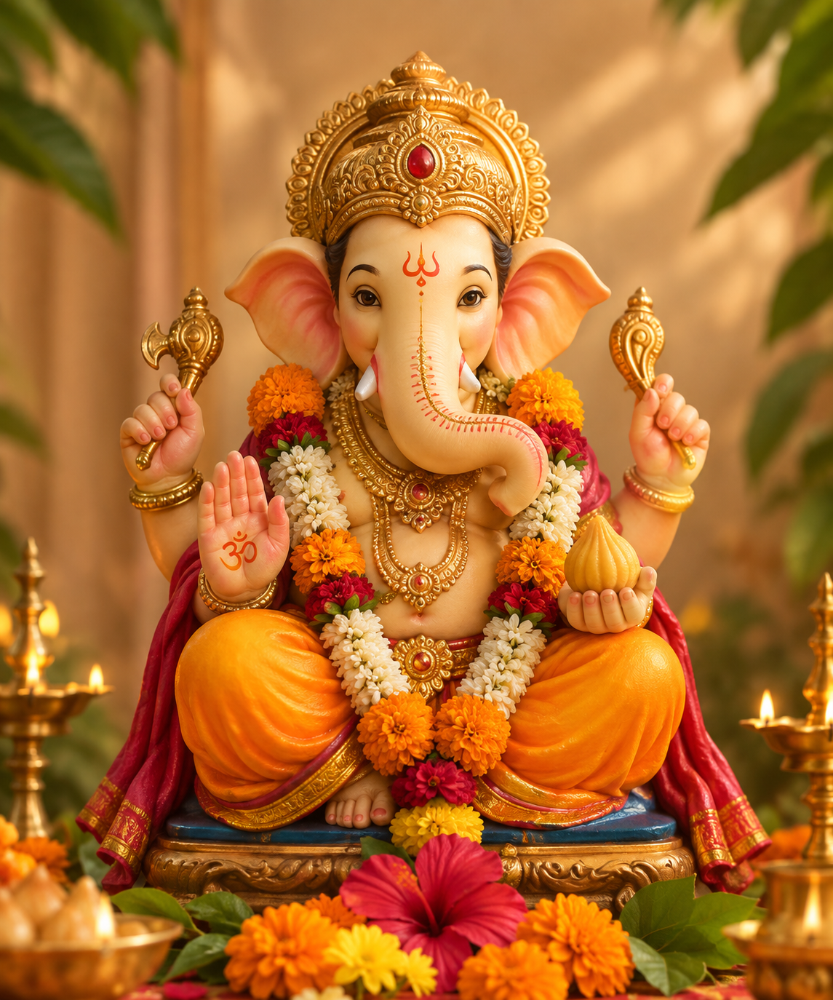
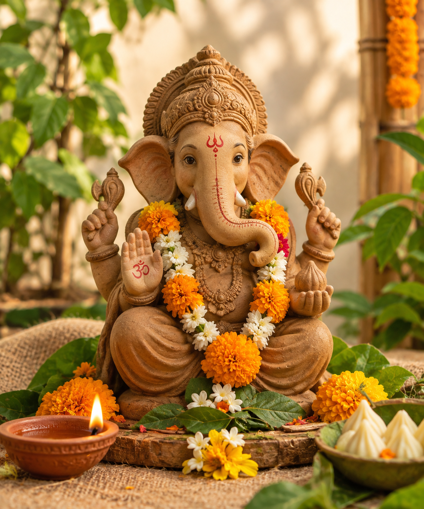

THE FESTIVAL OF NEW BEGINNINGS
Ganesh Chaturthi is a celebration dedicated to Lord Ganesha, the beloved deity associated with wisdom, prosperity and new beginnings.
Families and communities come together to welcome Ganesha, celebrate through prayers and festivities, and finally bid farewell during Visarjan.

CELEBRATE THE TRADITIONS
The ceremonial welcoming of Lord Ganesha.
A moment of prayer, light and devotion.
A beloved sweet offered during the festival.
A farewell filled with devotion and celebration.

CELEBRATE RESPONSIBLY
Our celebrations can bring joy while also respecting nature. Small choices can make Ganeshotsav more sustainable.
A MOMENT OF LIGHT
Light the diya and bring a little warmth to the celebration.
Description